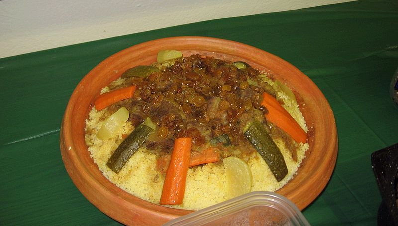

SCOTLAND FOREVER(Abrahim)
Couscous
History
The invention of couscous is widely credited to the Berbers, an ethnic group indigenous to Northwest Africa. However, instead of "couscous," it's commonly referred to as sekrou or seksu. In the eastern Mediterranean, another unique name for this pasta-like dish is used, called maftūl or maghribiyya.My Family makes CousCous many times a year in Africa because it is my facorite food. My grandma always makes it for me when I go to Morocco because she makes it very well, and wants to teach me, eventually, how to make it.
Description
a traditional Berber dish of semolina(granules of durum wheat) which is cooked by steaming. Usually Couscous also has meat, many vegetables, and a very strong sauce. CousCous is eaten in a way where you can only eat what is in front of you, it is one big bowl that a family shares, you don't use plates and you usually eat it with your hands.
Here is the Recipe
Couscous Recipe
For the Meat:

GoodSpeedY. Moroccan couscous 2006.jpg.
13 April 2010, Wikipedia
Link
couscous2006.jpg#filehistory
-
- 1 kilogram (about 2 1/4 pounds) bone-in lamb or beef, cut into large pieces, or 1 whole chicken
- 1 large onion, coarsely chopped
- 3 medium tomatoes, peeled and coarsely chopped
- 1/4 cup vegetable oil
- 1 1/2 tablespoon salt
- 1 tablespoon freshly ground black pepper
- 2 teaspoons ground ginger
- 1/4 teaspoon ground turmeric, or 1/4 teaspoon Moroccan yellow colorant
- 2 1/2 liters (about 2 1/2 quarts) water
- 1 handful fresh parsley and cilantro sprigs, tied into a bouquet
- 1/4 cup dry chickpeas, soaked overnight
-
For the Couscous:
-
- 1 kilogram (about 2 1/4 pounds) dry couscous (not instant)
- 60 milliliters (about 1/4 cup) vegetable oil
- Water, as needed
- 1 tablespoon salt
- 2 tablespoons unsalted butter
-
For the Veggies
-
- 1/2 small cabbage, cut into 2 or 3 wedges
- 3 to 4 medium turnips, peeled and halved crosswise
- 10 medium carrots, peeled and halved
- 1 to 2 medium tomatoes, peeled and quartered
- 2 small onions, whole or halved
- 1/2 cup fresh fava beans, optional
- 1 to 2 jalapeño or chili peppers, optional
- 1 small acorn squash, quartered, or a small pumpkin cut into 3-inch pieces
- 1 small acorn squash, quartered, or a small pumpkin cut into 3-inch pieces
- 2 to 3 small sweet potatoes, peeled and halved, optional
-
- Gather the ingredients.
- Mix the meat, onion, tomatoes, oil, and spices in the bottom of a couscoussier. Cook uncovered over medium to medium-high heat, stirring occasionally, for about 15 minutes, or until the meat is browned and the onions and tomatoes have formed a thick sauce.
- Add the water, the parsley/cilantro bouquet, and the chickpeas, if using. Cover, and bring to a boil over high heat. Reduce the heat to medium, and simmer rapidly for 25 to 30 minutes. (If omitting both meat and chickpeas, simmer for just a few minutes.)
- First Steaming of Couscous
- While the meat is cooking, get the couscous ready for its first steaming. Oil the steamer basket and set it aside. Empty the dry couscous into a very large bowl, and work in the vegetable oil with your hands, tossing the couscous and rubbing it between your palms. (This will help prevent the couscous grains from clumping together.)
- Work in 1 cup of water in the same manner, using your hands to evenly distribute the liquid into the couscous. Transfer the couscous to the oiled steamer basket.
- Add the cabbage to the meat mixture, and place the steamer basket on top (seal the joint if necessary). Once you see steam rising from the couscous, steam the couscous for 15 minutes.
- Pour the couscous back into the large bowl and break it apart.
- When the couscous has cooled enough to handle, gradually work in 2 cups of water and 1 tablespoon of salt with your hands. Again, toss the couscous and rub it between your palms to break up any balls or clumps. Transfer the couscous back into the steamer, taking care not to pack or compress the couscous.
- Second Steaming of Couscous.
- Gather the ingredients.
- Add the turnips, carrots, tomatoes, onions, and fava beans (if using) to the pot. Place the steamer basket on top of the couscoussier (seal the joint if necessary), and steam the couscous a second time for 15 minutes, timing from when you see the steam rising from the couscous.
- Once the couscous has steamed for 15 to 20 minutes, turn it out into the large bowl again. Break it apart, and let cool a few minutes.
- If you're serving the couscous with jalapeño peppers, simmer the peppers, covered, in a half-ladle of broth and a little water, for about 40 minutes, or until the jalapeños are tender. (The peppers are typically placed on top of the couscous, and small pieces may be broken off as a condiment.)
- Third Steaming of Couscous
- Gradually work 3 cups of water into the couscous with your hands, tossing it and rubbing the grains between your palms. Taste the couscous, and add a little salt if desired.
- Transfer about half of the couscous to the steamer basket. Again, try to handle the couscous lightly and avoid packing it into the steamer.
- Add the squash, zucchini, and sweet potatoes, if using, to the couscoussier, and place the steamer basket on top. (Again, seal the joint if necessary.)
- When you see the steam rise through the couscous, carefully add the remaining couscous to the steamer. Continue cooking, watching for the steam to rise from the couscous. Allow the couscous to steam for a full 15 to 20 minutes. At this point, all of the vegetables should be cooked. Test the vegetables to be sure, cooking longer if necessary. Taste the broth—it should be salty and peppery—and adjust the seasoning if desired.
- Serving the Couscous and Vegetables.
- Empty the couscous into the large bowl, and break it apart. Mix in the 2 tablespoons of butter with 2 ladles of broth.
- To serve the couscous, shape it into a mound with a well in the center. Put the meat into the well, and arrange the vegetables on top and all around. Distribute the broth evenly over the couscous and vegetables, reserving one or two bowlfuls to offer on the side for those who prefer more.
https://www.youtube.com/watch?v=GfNRbVquluA